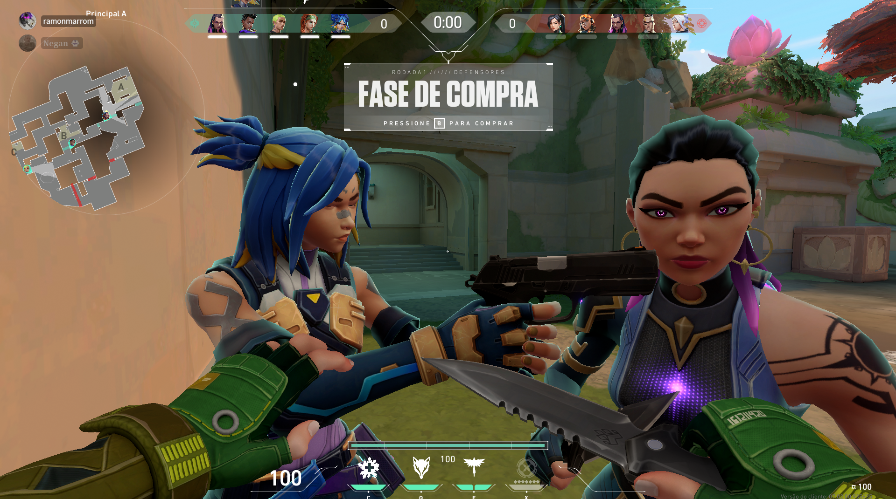
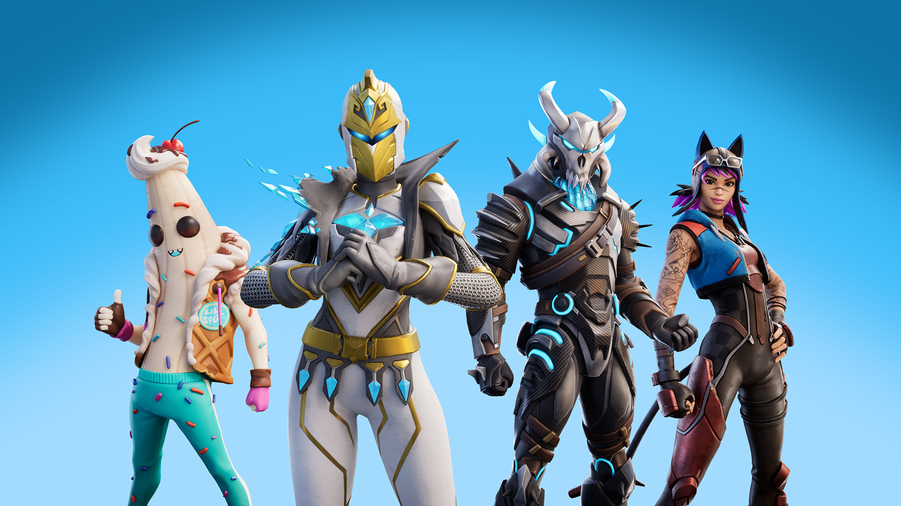
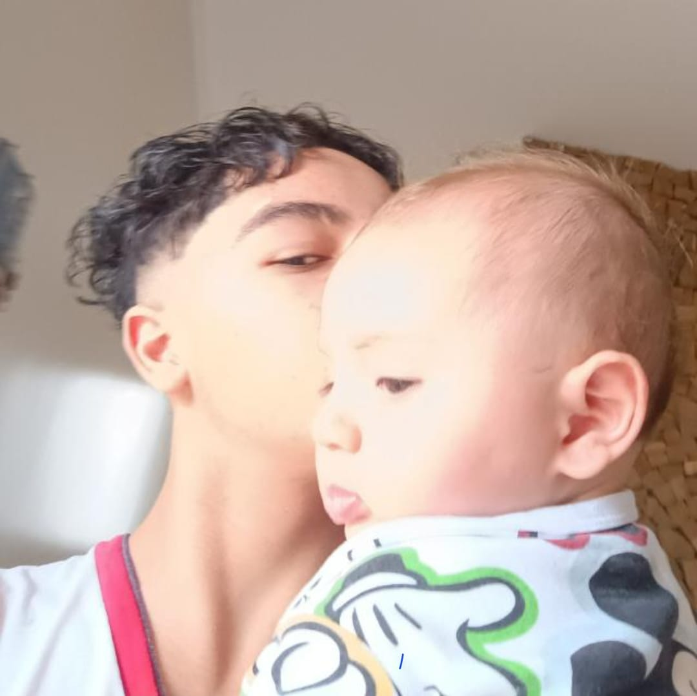

Conquistas Extraordinárias de Gabriel: O Caminho do Sucesso e da Habilidade
A história de Gabriel é uma trama tecida com conquistas notáveis, desafiando os limites do possível e deixando uma marca indelével em cada desafio enfrentado.
Mestre do Rocket League:
Gabriel emergiu como uma força imparável no universo do Rocket League, conquistando a incrível marca de 20 campeonatos. Sua habilidade excepcional o levou não apenas à vitória, mas também ao ápice, alcançando o nível máximo neste jogo frenético de carros e bola.

Domínio no Valorant:
No Valorant, Gabriel não apenas enfrentou, mas triunfou sobre o desafio épico de derrotar a equipe completa da Loud, demonstrando sua destreza e talento singular. Vencer um time inteiro sozinho é uma façanha impressionante, revelando a maestria de Gabriel nos campos virtuais.
Arquiteto no Fortnite:
Em Fortnite, Gabriel vai além das habilidades comuns. Ele não apenas domina o jogo, mas também constrói estruturas complexas de olhos fechados. Sua destreza arquitetônica torna-o uma força a ser reconhecida nos campos de batalha virtuais.
Momento Épico no Fortnite:
Um episódio que ecoa na história de Gabriel é o dia em que, num X1, enfrentou e derrotou Otávio Vulto Filhotito na picareta. Esse momento épico permanece gravado na memória de todos que testemunharam a batalha intensa e mostra a maestria de Gabriel no combate virtual.
Jogando em Dois Campos da Vida:
Além de suas proezas digitais, Gabriel é um verdadeiro herói fora das telas. Enquanto domina os jogos, ele equilibra com maestria a responsabilidade de cuidar de seu irmão de sete meses. Uma demonstração admirável de habilidade multitarefa e dedicação.
Folgas Memoráveis:
Gabriel, mesmo em sua intensa jornada de conquistas, reservou dois dias especiais para descanso, agora conhecidos como "Sábado" e "Domingo". Esses dias, marcados por sua ausência, tornaram-se símbolos de merecido repouso e reflexão após suas impressionantes realizações.
A jornada de Gabriel é mais do que uma história de vitórias digitais; é uma saga de dedicação, talento e equilíbrio entre os mundos virtual e real. Que cada conquista seja um trampolim para futuros triunfos, inspirando todos ao seu redor a alcançar alturas inimagináveis.